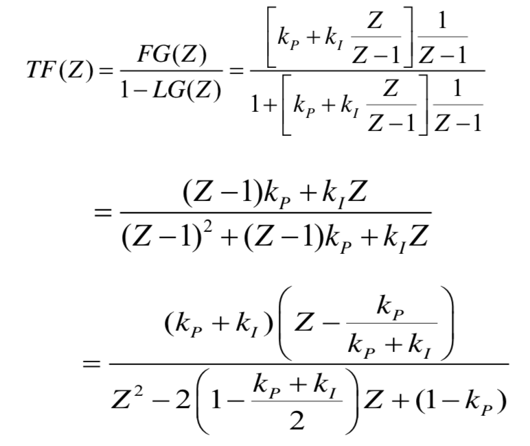

Design Verification Test Automation:
Developed and automated test configurations to validate Tibit/Ciena MicroPlug OLT/ONU modules (10G SFP+
transceivers) across optical, electrical, traffic, and environmental conditions within controlled thermal
chambers for C-Temp, E-Temp, and I-Temp ranges. Built Python drivers leveraging I2C, UART, and Ethernet
protocols to interface with measurement instruments, enabling automated testing and reliable data acquisition.
Built and maintained end-to-end test stations using optical power meters, optical variable attenuators,
optical switches, optical wavelength meter, 2x4 PLC optical splitter, an optical add-drop multiplexer,
Keysight Digital Communication Analyzer, Keysight power supplies, and Teledyne network traffic analyzer to
measure DUT performance with accuracy and repeatability. Designed and executed verification test-steps in
Python covering extinction ratio, optical output power, cross-point, jitter, mask margin, receiver
sensitivity,
RSSI behavior, power consumption, and traffic performance. Wrote and implemented a Python-based automated
test using an MVC architecture: the model encapsulated test steps, test harness, state machine, netlist,
and data processing; the view provided a GUI to display results, temperature corners, and step status; the
controller handled user inputs, arranged test sequencing, and updated the view. Created post-processing
pipelines to generate per-module CSV reports; summarized findings for customers and informed data-sheet
specifications for new MicroPlug designs. Improved measurement consistency, reduced manual rework, and
increased qualification throughput.
Weather Prediction With Machine Learning:
For this project, I used a machine-learning algorithm to predict the maximum temperature for the city of Santa
Rosa, CA. The goal here was to familiarize myself with machine learning algorithms and understand how this can
be applied to real-world engineering applications. The Gated Recurrent Units (GRU) algorithm was used for this
project. This is a type of deep neural network algorithm. Neural network algorithms are inspired by the
structure of the human brain. The neural network is a system that takes the training dataset
and then tries to train itself to understand the patterns in data. Furthermore, the trained neural network is
used to predict outputs for a new set of similar data. The neural networks are made up of layers of neurons.
These neurons are the core processing units of the network. The first layer is the input layer which receives
the input data, the output layer predicts the final output data, in between the input and output layers are
the hidden layers that perform the computation requirements for the network.
To better understand the GRU algorithm, let's review how the recurrent neural network (RNN) works. First, the
input information gets transformed into machine-readable vectors. Then the RNN processes the sequence of
vectors one by one. During this process, it passes the previous hidden state to the next step of the sequence.
The hidden state acts as the memory of the neural network. It holds information on previous data the network
has seen before. The GRU is the newer version of recurrent neural networks. It uses the hidden state to
transfer
information. It has two gates, a reset gate, and an update gate. The figure below shows the internal
components of the GRU algorithm.
Notation:
where,
is hidden layer vectors,
is the input vector,
are bias vectors for update gate, reset gate and hidden layers,
are the weight matrix for update gate, reset gate and hidden layers,
are activation functions.
The update gate (
) deciphers what information to throw away and what new information to add. The reset gate (
) is used to decide how much past information to forget. Now let’s look at the python code for this project. I
broke down the code into different segments to better understand the process.
Dataset:
I downloaded the temperature dataset for the city of Santa Rosa, CA from the national weather center (NOAA)
website in a .csv format.
Python libraries:
Imported the required python libraries for this project. Furthermore, I used the Tensorflow library to create
the model for this project.
Random seed value:
I set the seed value for the random value generator function to zero to ensure that the results are
repeatable.
Read & filter desired data:
I used the Pandas Dataframe python library to extract the data for the maximum temperature and the date
columns from the .csv file.
Handle missing values:
Generally, they are two options to deal with missing values in your dataset:
1) Replace the missing value with the median value from the dataset.
2) Drop the row(s) that contain the missing values from the dataset.
I decided to drop the rows with missing values for my dataset since I had a sufficient amount of data.
Time-series plot:
To better understand the data, I plotted the time series weather temperature dataset.
Data transformation:
To improve the deep learning neural network model's stability, performance data scaling/normalization is
highly recommended. I used the MinMaxScaler from the scikit-learn python library to normalize the dataset
between -1 and 1.
Split the dataset into train and test data:
I used 74% of data for train data and the remaining 26% as test data. The goal here was to train the model
with train data and validate the model’s performance with the test data.

Create input data for the model:
The GRU model takes 3-dimensional input data. The input data needs to be in the format defined below for the
model to accept the input data.
The model will use the number of the previous time-step to make a prediction. In this case, time-step/window
equals 181 days. This means that the model makes predictions based on the last 181-days data. Feature defines
the number of outputs for the model.
The shape of the input dataset for the model is (1438, 181, 1).
GRU model:
I used the Tensorflow python library to generate the GRU model. The model consists of one input layer, four
hidden layers, and two dense layers where the last dense layer is the output layer. The input layer and each
of the hidden layers have 128 units/neurons. The output layer consists of 1 unit/neuron. The Nesterov-accelerated Adaptive Moment Estimation (Nadam) optimizer with a learning rate
of 0.001318 was utilized to train the model. Furthermore, the loss function for the optimizer is huber_loss.
To make the model robust against overfitting, the Dropout function is used. The dropout rate for this model is
about 3.05%. This means the model will drop 3.05% of the units from the network.
Predict and transform the data:
After the model was trained, I generated the predicted values via the trained model. Then, I transformed the
data to its original format to evaluate the model’s performance.
System performance:
The model’s performance was evaluated based on the following items:
1) The plot of the training loss and the validation loss.
2) The root mean square error (RMSE).
3) The lift chart plot of the predicted data versus the test data.
4) Finally, compare the predicted data versus the actual data.
As it is shown below, the plot of the loss function for the model is converging to zero. This is the measure
of how well the model's predictions are to the actual values.
Next, the RMSE value for the model was calculated. RMSE is the standard deviation of the prediction errors
(residuals). It is a measure of how spread out these residuals are. It is used to define how concentrated the
data is around the line of best fit. The RMSE value for this model is 5.2758.
A lift chart is another tool that is used to depict the accuracy of the model. This is done by sorting the
predicted and expected values. Then plotted both datasets. The closer the predicted and expected lines are,
the more accurate your model is as it is shown below.
The final plot consisted of comparing the actual data versus the predicted data. As it is shown below, the
model was able to predict the maximum temperature with good precision.
Please click on the link below to download the source code from GitHub for this project.
Source Code
Water Impedance Test Stand:
I was assigned to develop an improved water impedance test stand in order to measure the pressure drop for
the unit under test. The process consisted of finding the test equipment (such as: flow meter, pressure
transducer, water pump, etc.) with required specifications. I assembled and tested the hardware as well
as wrote a program in C# that automated the test station. The test stand was optimized in
the software and the hardware resulting in more accurate and precise measurements. I created a user
friendly GUI for the test stand so that the technicians and operators could easily utilize the test stand.
During the creation of the test stand empirical data was collected and analyzed. The data analyses
consisted of a correlational test (linear regression analysis in Minitab) and repeatability test.
The results rendered indicated that the new test stand had superior performance in hardware and software
functionality. The equation below depicts how the pressure drop was calculated:
Pressure Drop Equation
where,
is the flow rate
is the pipe/tube inner diameter
is the pipe/tube length
is the dynamic viscosity
is the pressure drop
Furthermore, the impedance is calculated based on the measured pressure drop and the flow rate as shown below:
Automation Test Development:
Tasked with developing automation diagnostic tools to test the DELL servers on a system level. The process
consisted of writing the test in C# by converting some of the frameworks and libraries from Python. By
developing the automation test in the C# environment, the test structure, re-usability, efficiency, and
reliability was improved. I maintained, updated/modified, and reviewed the automation test
scripts written in Python to test the functionalities of the DELL server systems that were in production. The
automation test was API (Application Programming Interface) driven due to its stability and short release
cycles and fast feedback loops. Converting the Python code to C# improved the overall test robustness.
Furthermore, we ran the test scripts on a Cumulus network environment in order to test the UUT (Unit Under
Test). Since the Cumulus network is based on a .Net framework, writing the automation test in C# improved the
testing time by a large margin. During this process we used Mercurial as a source control in order to
maintain, modify and update the scripts.
DSP Based Phase-Locked Loop:
Phase-locked loop (PLL) is a control system that is designed to align the phase and frequency of the phase
accumulator with the complex sampled data of the input signal. PLL has many applications within communication
systems such as: demodulators, signal reconstruction, clock recovery, and frequency synthesizer.
The building blocks for a PLL consist of:
1. Phase detector
2. Loop filter
3. DDS (Direct Digital Synthesis)
The phase detector is used to estimate the error between the input signal and the reference signal. The loop
filter is responsible for removing the noise and tracking the time-varying input phase. The DDS is designed to
generate the reference frequency. In a PLL, the DDS is used as a local oscillator. Below is a block diagram of
the DSP based phase-locked loop.
PLL Block Diagram
The Python program loop steps through the following operations:
1. The phase detector is used to estimate the phase error.
2. The loop filter is used to remove the errors and track the phase of the input signal.
3. The DDS is used as a local oscillator to generate the reference signal.
The closed loop transfer function of the aforementioned model is depicted below:

The parameters for the z-transform model are as follows:
where,
is the bandwidth of the loop filter
is the digital undamped natural frequency
is the proportional loop filter gain
is the integral loop filter gain
is the loop filter damping factor
(typically )
The first plot shows a comparison of the real and imaginary parts of the input signal versus the output
signal. In Fig.1, the phase of the output signal is locked to the phase of the input signal after
approximately 110 to 120 samples. The second plot demonstrates the phase difference between the input and the
reference signal.
Figure 1
Figure 2
Click here to download the source code in Python
Low Frequency Oscillation (LFO) Signals:
Tasked to find the root-cause of LFO signals which distorted the spectral purity of the desired signal. LFOs are
generally undesired parasitic signals in electronic devices. It was determined that the LFOs were generated
because of a mismatch of the system on the frequency multiplier board. The impedance mismatch was between the
output of the limiting amplifier (with 50 ohm output impedance) and the input of the Balun (with
25 ohm input impedance). Accordingly, the impedance mismatch caused some of the incident power to be reflected
back and created instability of the limiting amplifier. As a result, the LFOs were generated at approximately
2 to 5 KHz offset from the carrier. One option was to replace the Balun completely. Due to complexity of the
aforementioned solution, an alternative route was explored. A PI-Pad was designed in Advanced Design Systems
with a 0402 dimension size resistors and was placed between the output of the limiting amplifier and the input
of the Balun. By terminating the active component with resistive loads resulted in reducing the effect of
parasitic oscillation on the desire signal and in some frequency bands the LFOs were completely removed.

Spectral Station:
Maintained and supported the spectral station. The station tested the Agile Signal Generator (UXG) instruments
for Harmonics, Subharmonics, and Spurious signals with a spectral analyzer. The algorithm for the test was
written in C#. The test incorporated Standard Commands for Programmable Instruments (SCPI) in order to
communicate with the instrument. A data-pack was utilized to define the frequency resolutions
for the testing process.
General Information:
The spectral purity of a Continuous Waveform (CW) source is largely affected by non-ideal components of the
system. The effect of the non-ideal components on the actual signal results in degradation of the power
quality of the signal. Below is a list of different types of spurious signals:
1. Harmonic Signals
2. Subharmonic Signals
3. Spurious Signals
Harmonic and Subharmonic Distortions:
Harmonics are undesired signals at integer multiples (sub-multiples) of the carrier frequency. The distorted
signal is created by the nonlinearity characteristic of the microwave components in the RF chain (such as
mixers, local oscillators, amplifiers, etc.).
The difference between harmonic/subharmonic versus spurious signals:
1. Harmonics (or subharmonics) signals are integer multiples (or submultiples) of the input frequency.
2. Spurious signals are presented at non-integer multiples of the input frequency.
Pulse Station:
Maintained and supported the pulse station. The station tested the UXG instruments for “Pulse Amplitude
Accuracy/ Pulse power”, “Pulse Width”, “Pulse Delay”, “Overshoot”, “Compression”, and “Video Feedthrough” via a
Digital Sampling Oscilloscope (DSO). The algorithm for the test was written in Rocky Mountain Basic (RMB). Furthermore, General Purpose Interface Bus (GPIB) controllers were used for data communication and
SCPI commands were used to set the instrument states.
General Information:
In general Pulsed-RF tests are executed with either a spectrum analyzer or Oscilloscope. For this test a
Digital Sampling Oscilloscope (DSO) was used to accurately characterize the performance of the pulse
waveforms. The characteristics of a pulsed signal are used to define the performance and capability of the
instrument. Some of the terminology for the pulse measurement is defined as follows:
1. Rise time is defined as the 10% to 90% mark on the rising edge of the pulse signal.
2. Fall time is defined as the 10% to 90% mark on the falling edge of the pulse signal.
3. Pulse width is defined as the 50% mark on the rising edge to the 50% mark on the falling edge of the pulse
signal
4. Pulse Period is defined as the time interval between the rising edges of the two consecutive pulse signals.
5. Overshoot is defined as the maximum voltage level of the pulse top amplitude.
6. Pulse delay is defined as the time interval between the 50% mark on the rising edge of the trigger output
and the 50% mark on the rising edge of the pulse signal.
7. Video feedthrough is a specification term which is used to define the pulse performance for microwave
synthesizers. Video feedthrough is defined as the amount of drive signal from the modulator leaks into the RF
output. Basically, the spurious signals appeared at the RF ports of the switch when the port is switched
without an RF signal present. Generally the frequency content of video feedthrough signal is concentrated
below 250 MHz. The pulse test consisted of a lowpass filter (with passband of 250MHz) that extracted the video
feedthrough signal from the RF signal.
Pulse Waveform
Data Analysis:
Setting the Test Line Limits (TLL) for production instruments consisted of: characterizing the product
performance, deciphering the performance drifts either due to aging of the RF components or the effect of
temperature variation of the environment on the instrument, and determining the uncertainty of the measurement
(AKA, measurement uncertainty). A Gaussian distribution was utilized to accurately characterize
the measured sample data. This process involved collecting and analyzing the sample data by using descriptive
statistics such as the mean (to define the center of the distribution) and the standard deviation (to
determine the degree of deviation from the mean), etc. Moreover, a histogram and normal plots were used to
delineate the outliers in the data set as well as define the upper and lower limits of the normal distribution
(data that was 2.5 standard deviations from the mean was not included). Other terms that were used for this
process are explained below:
1. The confidence level C is the probability that our TLL setting process will produce a passing rate
(that is at least our desired passing rate). The more samples you have in your data set, the higher your
confidence level is going to be.
2. The proportion P is our best estimate of the minimum future turn-on rate (passing rate). It is the
proportion of devices that pass the production test at initial turn-on.
3. The test line limit (TLL) is the pass/fail threshold of the production test.
4. Repeatability and Reproducibility are the two components of precision in a measurement system.
5. Repeatability is the ability of an operator to consistently repeat the same measurement of the same
part, using the same gage, under the same conditions.
6. Reproducibility is the ability of a gage, used by multiple operators, to consistently reproduce the
same measurement of the same part, under the same conditions.
Normal Distribution
Pool Playing Robot:
Designed a pool-playing robot that would detect red or blue balls with the use of programmable camera and then
shoot the ball into a particular pocket based on information from the sensors. The parts for the robot consist
of a ball-shooting solenoid, a ball-capturing clamp, ultrasonic sensors, and a color detetion camera system.
The project was ranked first amongst all the other competitors. Some of the videos of the
constructed robot are listed below:
C++ Course Work:
I have begun to expand my knowledge in the area of programming by taking a C++ course. Some of the programs I
wrote for the class are listed below:
1. Created a calculator using a "switch statement".
Source Code
2. Created a rocket shape based on the user input of three values height, width, and stages using the concept
of "functional decomposition".
Source Code
3. Designed and implemented a C++ structure data type for monthly budget expenditures. The program has two
monthly budget structure variables. One structure variable will hold budget figures and the second structure
variable will prompt the user to enter the actual expenditures for the past month. the structure variables are
passed to the functions as parameters to compare expenses and display budgets.
Source Code
4. Designed and implemented a fraction class data type. The program consisted of three parts: the class
specification file (where the data and fucntion declaration occured), the class implementation file (where I
declared the function definitions), and the client file. The program adds or subtracts fractions.
Source Code
5. Created a game of life computer simulation program utilizing a two-dimensional array operation. The
simulation process consist of the life and death events of a population of organisms. This program will
determine the life, death, and survival of bacteria from one generation to the next, assuming the starting
grid of bacteria is generation zero.
Source Code